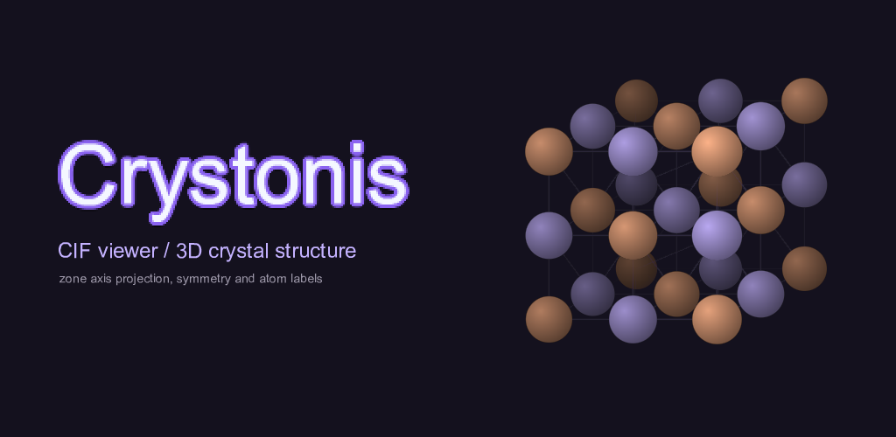
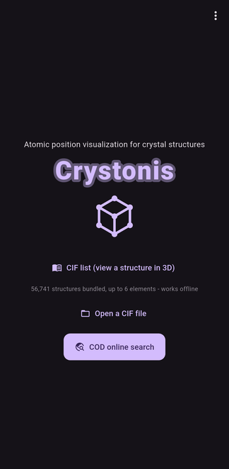
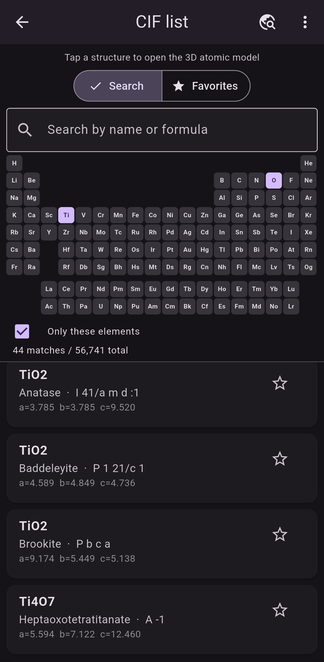
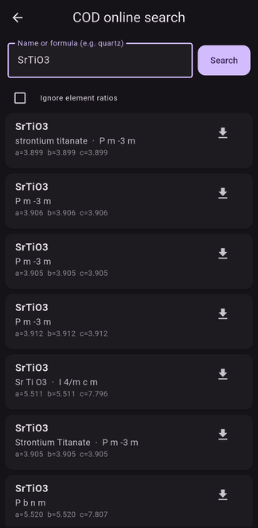
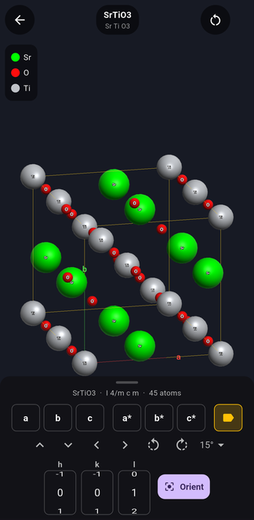
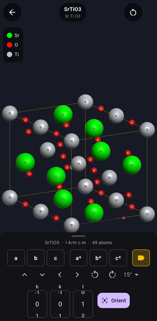
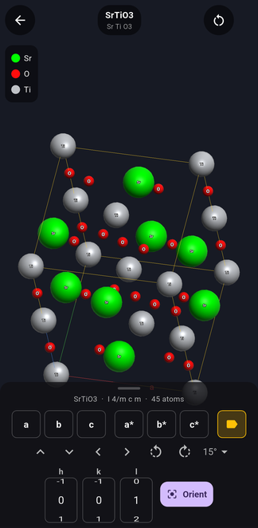

1Open a structure
A CIF is used as-is when the symmetry operations are written out, and expanded from the symbol when only a space-group symbol is given.
Apps › Crystonis

Crystonis opens a crystal structure file (CIF) and draws the atomic arrangement in 3D. Turn a structure over in your hand in front of the instrument, or on the way there.

A CIF is used as-is when the symmetry operations are written out, and expanded from the symbol when only a space-group symbol is given.

Structures collected from the Crystallography Open Database are bundled with the app. Pick elements on the periodic table and the candidates narrow down — 44 of 56,000+ in the screen here — and they open with no network at all. You can also restrict the list to structures made only of the elements you picked.
Star the ones you come back to, and they stay at the top.

When you need something that is not bundled, search the Crystallography Open Database by material name or formula and download the CIF. This is the only part of the app that uses the network.

Atoms are coloured by element with bonds between nearest neighbours, inside the unit-cell box. A legend names the elements, and the space group and atom count stay along the bottom — SrTiO3 · I 4/m c m · 45 atoms in the screen here.
Repeat count, atom radius and labels can each be switched from the settings.

The a, b, c, a*, b* and c* buttons snap the model to the principal directions, ready to hold up against a diffraction pattern.

Give an hkl and the structure is projected along that direction. This is the view that tells you whether the projection you are looking at through the column is the one you think it is.
Everything is calculated on the device. The app has no account, collects no personal information, and sends nothing to us. Searching the Crystallography Open Database is the only time it reaches the network, and that request carries only your search words.
See the privacy policy (한국어 · 日本語) and the terms of use (한국어 · 日本語).
Email: labonisapps@gmail.com